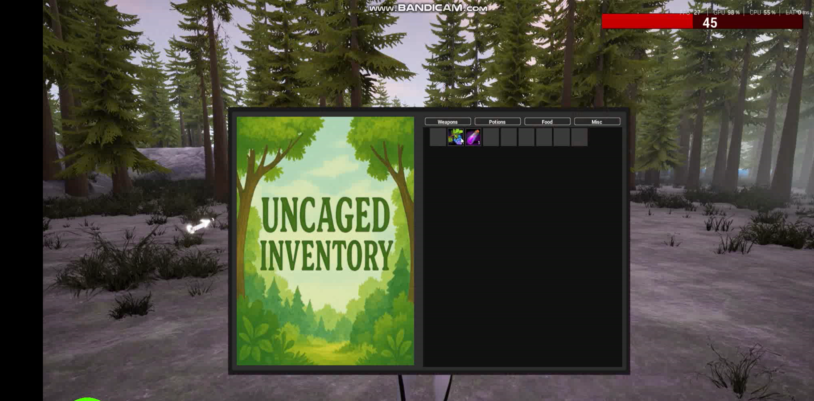
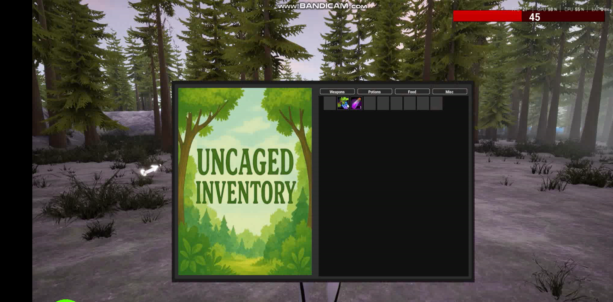

UnCaged
Survive the fog. A single player third person RPG where you escape the wild after a night out.
Role: Solo Developer • GitHub Repository
About the Game
UnCaged: The Wild After Party is a single player RPG built in Unreal Engine 5 using Blueprints. You play as Ricky, lost in a dense foggy forest at dawn, trying to follow clues, survive encounters, and find a way out. The core objective is to locate the tribal leader, defeat him, take his phone, and trigger the ending that represents escape.
The world leans into a misty wet forest mood inspired by The Witcher 3, supported by fog density tuning, ambient soundscapes, and Niagara VFX for combat impacts and movement dust. Combat is driven by a stable single montage approach after testing a combo system that caused unstable root motion transitions.
Enemies use NavMesh for traversal and Behaviour Trees for patrol, chase, and combat behaviour. They patrol along paths, break into pursuit on player detection, then return to patrol when the player is lost. The level was shaped with Landscape tools and the Landmass plugin, with traversal features like a physics driven rope bridge implemented using constraints.
My Contribution
I built the full project end to end in Unreal Engine 5. I implemented the third person controller, camera setup, locomotion blendspaces, sprint and crouch states, and the main combat loop with hit feedback VFX and audio. I also integrated character and animation assets from Mixamo and handled retargeting where required.
I developed AI using NavMesh plus Behaviour Trees, including patrol paths, detection, chase, strafing style combat movement, and state transitions back to patrol. I created the environment using Landscape sculpting and Landmass splines, built traversal set pieces like the rope bridge using physics constraints, and assembled the UI set including menus plus health and stamina bars.
Play Demo 
